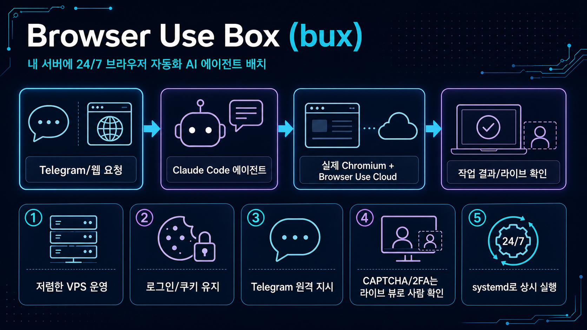

bux는 저렴한 Ubuntu 서버에 Claude Code, 실제 Chromium 세션, Browser Use Cloud, Telegram 봇을 묶어 “문자로 지시하면 브라우저 작업을 처리하는 상시 에이전트”를 빠르게 띄우는 프로젝트입니다.

“$5 VPS 한 대를 Claude Code + 실제 브라우저 + Telegram 원격 조작이 가능한 개인 자동화 박스로 바꿔주는 설치형 패키지”입니다.
서버에 켜진 브라우저를 Claude가 사용하므로 노트북을 열지 않아도 반복 웹 작업을 시킬 수 있습니다.
상태가 /home/bux에 남아 재부팅 이후에도 쿠키·대화·작업 맥락을 이어가는 구조입니다.
첫 채팅 바인딩 후 메시지를 큐에 넣고 lane별 세션으로 처리하는 봇 흐름을 제공합니다.
2FA, CAPTCHA, 로그인 벽은 라이브 뷰 URL을 열어 사람이 처리하도록 설계되어 있습니다.
install.sh가 Node/Claude Code/ttyd/browser-harness/systemd 서비스를 한 번에 구성합니다.
직접 운영형과 Browser Use Cloud 관리형 파일럿/상용 흐름을 함께 겨냥합니다.
README 기준 systemd 아래 browser-keeper, Telegram bot, ttyd가 돌아가고, Claude Code가 브라우저 하네스를 통해 실제 브라우저 세션을 사용합니다.
API 키, Claude 로그인, 서버 권한, Telegram 토큰, 장기 실행 서비스, 로그 점검은 사용자가 직접 관리해야 합니다.
개인/소규모 팀이 Telegram에서 웹 확인, 리서치, 이메일/관리 페이지 확인 같은 반복 작업을 자연어로 시키고 싶을 때.
내 업무 사이트에서 로그인 유지·CAPTCHA·2FA·권한 범위·브라우저 사용량·API 비용이 실제로 감당 가능한지 샘플 작업으로 확인해야 합니다.
민감 계정/금융/고위험 운영을 바로 맡기거나, 루트 설치 스크립트와 외부 클라우드 브라우저 의존성을 검토하지 않고 도입하는 것은 피하는 편이 좋습니다.
수집 근거: GitHub API, README/install.md, pygount 요약, 저장소 파일 구조. 상세 코드 리뷰가 아니라 빠른 도입 판단용 요약입니다.
예: 로그인 필요한 웹페이지 확인 → 요약 → Telegram 보고.
주요 계정이 아닌 테스트 계정과 최소 권한 API 키로 먼저 검증합니다.
로그인 벽, CAPTCHA, 세션 만료, 비용, 속도, Telegram 응답 품질을 체크합니다.